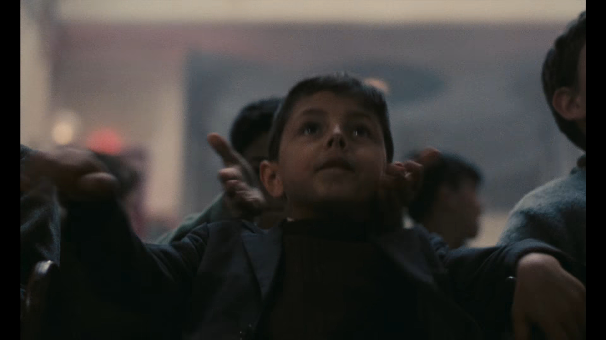

시네마천국
1988년작
2시간 4분
알프레도 역
필립 느와레
프랑스의 위대한 배우 중 한명으로 명작이라 불리는 시네마 천국 의 영사기사인 알프레도역과 일 포스티노의 파블로 네루다 역으로 유명하다. 2006년 암으로 프랑스 파리에서 사망하였다.
출연작
수상내역
음악감독
엔니오 모리코네
엔니오 모리코네(이탈리아어: Ennio Morricone, Cavaliere di Gran Croce OMRI, 1928년 11월 10일 ~ 2020년 7월 6일)는 이탈리아의 작곡가, 지휘자, 트럼펫 연주자이다
주요작품 목록
영화OST 목록
감독
주세페 토르나토레
주세페 토르나토레(이탈리아어: Giuseppe Tornatore, Grande Ufficiale OMRI, 1956년 5월 27일 ~ )는 이탈리아의 영화 감독, 각본가, 제작자이다.
참여작품 목록
수상내역
살바토레 디 비타 역
자끄 페렝
프랑스의 배우, 영화감독. 시네마 천국 에서 중년 모습의 토토를 연기한 것으로 유명하며 영화 제작이나 감독 활동도 많이 하였다. 2022년 암 투병 끝에 80세의 나이로 사망하였다.
출연작
감독/제작